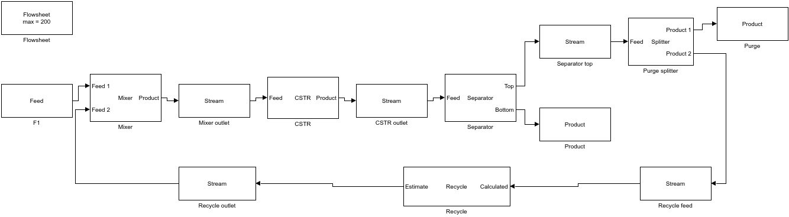
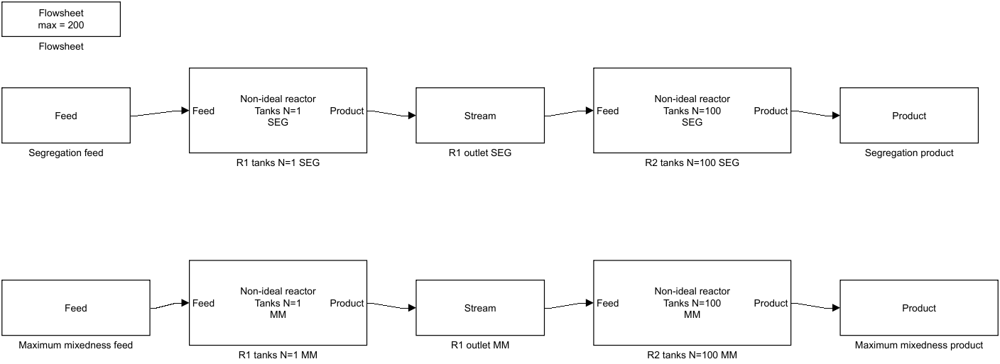
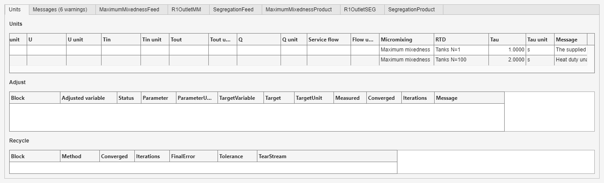

Open a prepared flowsheet to learn ideal and non-ideal reactor connections, specifications, and result checks before building the same pattern yourself.
Choose an example whose blocks, reactor model, and operating mode resemble your intended flowsheet. Examples open from the main Non-Ideal Reactor Plus screen.
In the main window, press Open example... in the Flowsheet (Simulink) group. The selector lists these descriptions:
| No. | Description shown in the selector |
|---|---|
| 1 | Isothermal CSTR |
| 2 | Adiabatic CSTR and cooler |
| 3 | Adiabatic PFR |
| 7 | Adiabatic CSTR comparison (Problem 44c) |
| 12 | Problem 19 - Adiabatic gas PFR |
| No. | Description shown in the selector |
|---|---|
| 4 | Parallel CSTRs (Problem 40b) |
| 8 | Problem 37a - Two CSTRs in series with two feeds |
| 9 | Problem 40a - Two CSTRs in series |
| 10 | Problem 42 - CSTR then PFR |
| 11 | Problem 42 - PFR then CSTR |
| 16 | Problem 30 - Mixer and adiabatic CSTR |
| 17 | Problem 31 - Mixer and cooled CSTR |
| 25 | Problem 38 - Two parallel PFRs with one adjusted volume |
| 27 | Problem 49a - Two equal adiabatic CSTRs |
| 30 | Problem 33b - Cooled reversible gas CSTR |
| 31 | Problem 41 - Three CSTRs, adjusted feed flow |
| 32 | Problem 43 - PFR then CSTR, adjusted feed flow |
| 33 | Problem 43 - CSTR then PFR, adjusted feed flow |
| 34 | Problem 45c - Cooled tanks, adjusted areas |
| 35 | Problem 28 - Steam-jacketed CSTR |
| 41 | Problem 48 - CSTR then adiabatic PFR, adjusted volumes |
| 49 | CSTR, separator and recycle with purge |
| No. | Description shown in the selector |
|---|---|
| 6 | Adjusted CSTR volume |
| 13 | Problem 21a - Isothermal PFR, adjusted feed T |
| 14 | Problem 21b - Adiabatic PFR, adjusted feed T |
| 15 | Problem 27 - Jacketed CSTR, adjusted feed T |
| 18 | Problem 44a - Adjusted PFR and CSTR volumes |
| 19 | Problem 45a - Three equal adjusted CSTRs |
| 20 | Problem 45b - Adiabatic CSTR, adjusted feed T |
| 21 | Problem 17 - Adiabatic PFR, adjusted volume |
| 22 | Problem 18 - Acetone cracking, adjusted PFR volume |
| 23 | Problem 23 - Butane isomerization, adjusted PFR volume |
| 24 | Problem 26 - Gas CSTR scale-up, adjusted volume |
| 26 | Problem 40c - Isothermal PFR, adjusted volume |
| 28 | Problem 49b - One adiabatic CSTR, adjusted volume |
| 29 | Problem 34d - Jacketed Monsanto-reaction CSTR |
| 36 | Problem 36 - Air-cooled CSTR, adjusted area |
| 37 | Problem 20b - Adiabatic reversible PFR, adjusted volume |
| 38 | Problem 29a - Isothermal CSTR, adjusted volume |
| 39 | Problem 29b - Cooled CSTR, adjusted area |
| 40 | Problem 32a - Three CSTR steady states (middle branch unstable) |
| 42 | Problem 33d - CSTR area at maximum heat generation |
| 43 | Problem 15 - Isothermal gas PFR, number of tubes |
| 44 | Problem 22 - Adiabatic NO oxidation PFR volume |
| 45 | Problem 16 - Isothermal PFR space time and product flow |
| 46 | Problem 35 - Isothermal NO-reduction CSTR |
| 47 | Problem 35 - Adiabatic CSTR with adjusted feed temperature |
| No. | Description shown in the selector |
|---|---|
| 5 | CSTR with recycle |
| 48 | PFR with recycle (R = 1, Levenspiel) |
| 50 | Separator recycle loop with adjusted CSTR volume |
| No. | Description shown in the selector |
|---|---|
| 51 | Non-ideal: January 2024 exam - two trains |
| 52 | Non-ideal: second-order series - two trains |
| 53 | Non-ideal: parallel PFR and CSTR (second order) |
| 54 | Non-ideal: ideal and RTD-based CSTR side by side |

Run the model and inspect the separator recoveries, purge Stream, recycle convergence, and final material balance.


Open each reactor to compare its RTD and micromixing settings, run the model, and read the outlet concentrations from the corresponding Stream tabs.
The examples are checked against textbook or analytical results. Open them from the selector, run them, and compare the reported quantities in Show results.
Descriptions in these grouped tables are the same descriptions shown in Open example...; the original numbers remain unchanged.
Return to the guide home to choose another chapter or compare your flowsheet with another example group.